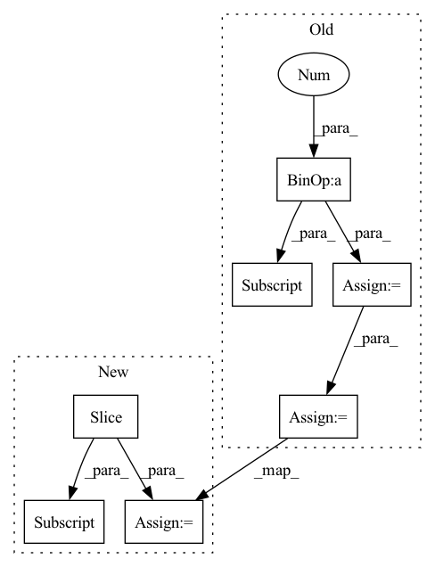

Pattern ID :2562

Before Change
batch_size, C, L = x.shape
L1 = int(L / 4)
L2 = int(L / 2)
L3 = int(3 * L / 4)
nonlocal_feature = torch.zeros_like(x)
feat_sub_l1 = x[:, :, :L1]
feat_sub_l2 = x[:, :, L1: L2]
feat_sub_l3 = x[:, :, L2: L3]
feat_sub_l4 = x[:, :, L3:]
nonlocal_l1 = self.non_local(feat_sub_l1)
nonlocal_l2 = self.non_local(feat_sub_l2)
nonlocal_l3 = self.non_local(feat_sub_l3)
nonlocal_l4 = self.non_local(feat_sub_l4)
nonlocal_feature[:, :, :L1] = nonlocal_l1
nonlocal_feature[:, :, L1: L2] = nonlocal_l2
After Change
feat_sub_l1 = x[:, :, :L1]
feat_sub_l2 = x[:, :, L1: L2]
feat_sub_l3 = x[:, :, L2:]
nonlocal_l1 = self.non_local(feat_sub_l1)
nonlocal_l2 = self.non_local(feat_sub_l2)
nonlocal_l3 = self.non_local(feat_sub_l3)
nonlocal_feature[:, :, :L1] = nonlocal_l1
nonlocal_feature[:, :, L1: L2] = nonlocal_l2
nonlocal_feature[:, :, L2: ] = nonlocal_l3
return nonlocal_feature
In pattern: SUPERPATTERN
Frequency: 3
Non-data size: 7
Instances
Fragment ID: 8357625
Project Name: guanghaoyin/rtcan-1d
Commit Name: c40a8978bd3a75323635f00a3a95ac53d3e2a888
Time: 2021-05-27
Author: yinguanghao.phd@gmail.com
File Name: model/Attention_module.py
M Class Name: NONLocal1D
N Class Name: NONLocal1D
M Method Name: forward(2)
N Method Name: forward(2)
M Parent Class: nn.Module
N Parent Class: nn.Module
M File Name: model/Attention_module.py
N File Name: model/Attention_module.py
M Start Line: 287
M End Line: 304
N Start Line: 287
N End Line: 300
'>
Before Change
x_residual = x_residual + x
in_channels = growth_rate[idx]
stacked_channels = sum(growth_rate[idx+1:])
sections = [in_channels, stacked_channels]
if idx != depth - 1:
x, x_residual = torch.split(x_residual, sections, dim=1)
output = x_residual
After Change
x = input
else:
_in_channels = growth_rate[idx - 1]
sections = [_in_channels, sum(growth_rate[idx:])]
x, x_residual = torch.split(x_residual, sections, dim=1)
x = self.net[idx](x)
x_residual = x_residual + x
'>
Fragment ID: 8357624
Project Name: tky823/dnn-based_source_separation
Commit Name: 3bac874df403a2b5648fd98049865790c104ed55
Time: 2021-10-16
Author: 40362510+tky823@users.noreply.github.com
File Name: src/models/d2net.py
M Class Name: D2Block
N Class Name: D2Block
M Method Name: forward(2)
N Method Name: forward(2)
M Parent Class: nn.Module
N Parent Class: nn.Module
M File Name: src/models/d2net.py
N File Name: src/models/d2net.py
M Start Line: 174
M End Line: 188
N Start Line: 187
N End Line: 195
'>
Before Change
x_residual = x_residual + x
in_channels = growth_rate[idx]
stacked_channels = sum(growth_rate[idx+1:])
sections = [in_channels, stacked_channels]
if idx != depth - 1:
x, x_residual = torch.split(x_residual, sections, dim=1)
output = x_residual
After Change
x = input
else:
_in_channels = growth_rate[idx - 1]
sections = [_in_channels, sum(growth_rate[idx:])]
x, x_residual = torch.split(x_residual, sections, dim=1)
x = self.net[idx](x)
x_residual = x_residual + x
'>
Fragment ID: 8357639
Project Name: tky823/dnn-based_source_separation
Commit Name: 3bac874df403a2b5648fd98049865790c104ed55
Time: 2021-10-16
Author: 40362510+tky823@users.noreply.github.com
File Name: src/models/d2net.py
M Class Name: D2BlockFixedDilation
N Class Name: D2BlockFixedDilation
M Method Name: forward(2)
N Method Name: forward(2)
M Parent Class: nn.Module
N Parent Class: nn.Module
M File Name: src/models/d2net.py
N File Name: src/models/d2net.py
M Start Line: 75
M End Line: 89
N Start Line: 84
N End Line: 92